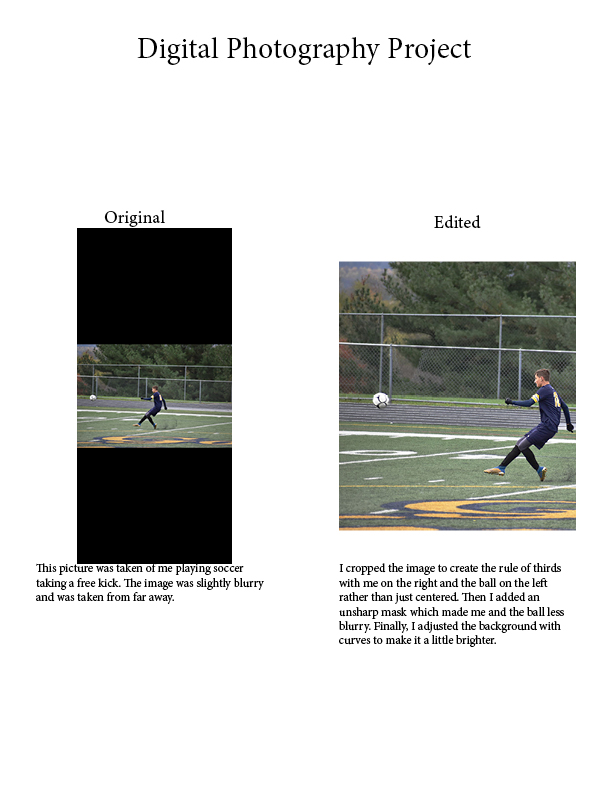

Julius Heiland's Soccer Photo for AENG 110 Class |
|||
| Home Video Project Photo Project Bookmark Project | |||
|  |
Photo Project Home Cat Photo Soccer Photo Lighthouse Photo |
This is a picture of me playing soccer. For this project we were asked to take pictures in different viewpoints and edit them using photoshop. A lot of my pictures were edited with an AI generative fill that is built in Adobe Photoshop like in the cat and lighthouse picture. The rest of the pictures including the lighthouse, soccer, and cat photos are all linked to the right. Click on them all to check out each photo! All of the pictures on the right side are unedited and on the right were all edited by me. This was by far the most difficult project for me in this class, but I believe it came out well. |
|
|
©2023 Julius Heiland | |||